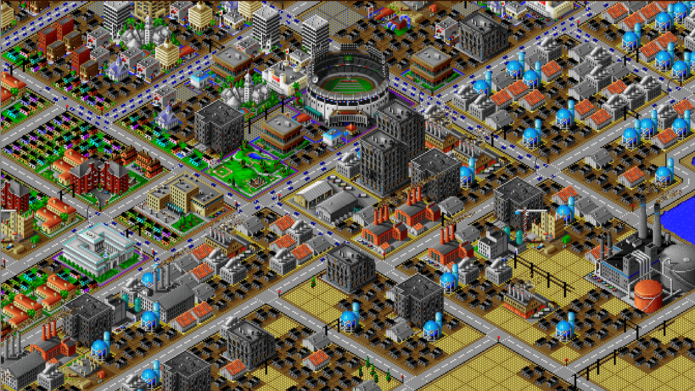
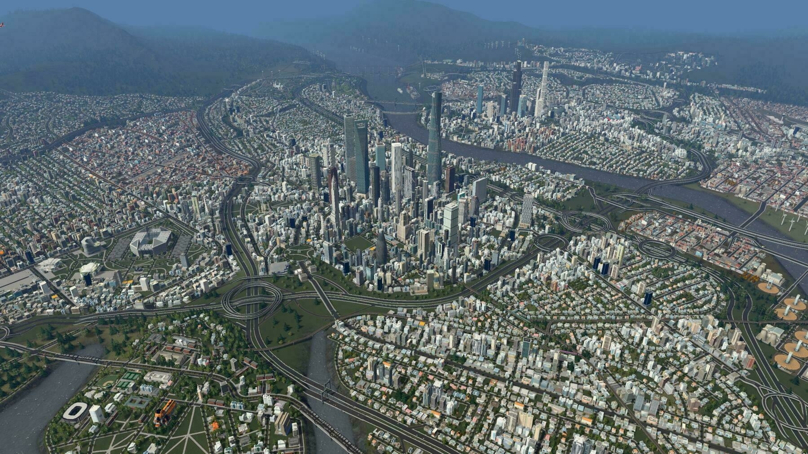

Video Gaming vs Videos of Gaming
Over the past couple months I’ve rekindled my enjoyment of playing city-building video games. I feel that SimCity might be one of the greatest gaming inventions of all time. I played the original a little bit, but SimCity 2000 is where I got serious. I was certainly addicted to the game even though I did not have a computer on which to play it. I invited myself over to a friend’s house daily to play and I also played on the computer in the band room of my high school.

While the SimCity franchise still exists, the new hotness is Cities: Skylines. (Okay, it’s not new. The game came out in early 2015!) I’ve been playing it when I have some time, or when I feel like replacing sleep with gaming. It’s pretty fun and seems to have evolved in a lot of the ways we gamers would have liked SimCity to have evolved.
As with any hobby or past-time, I also began watching YouTube videos about the game. I had questions. How do you best lay out a traffic grid? How do you best resolve traffic flow problems? How do you best zone high-density versus low-density areas? How do you mitigate pollution? How does noise pollution interact with residential areas?
One of the most interesting channels I’ve run across is an urban planner who plays the game, offering instructions on how to build a city with a flair for actual city planning. I’ve been watching his Ultimate Beginners Guide series where he is building up a city bit by bit through all sorts of different neighborhood styles and amenity additions. I find it very interesting!
Something I’ve noticed is that I might get more enjoyment from watching these progressive city-building videos than from playing the game myself. Watching the videos feels just about the same as playing, except it’s as if I’m better at playing. It feels like I’m making discoveries organically while watching, which is definitely not how it feels when playing. When playing I run into road blocks where I can’t figure out how to do something or I know that I’m doing something ineffectively. I hit the friction of leaving the game to figure out the best way. I hit the friction of wrestling with the aging user interface (remember, it was initially released in 2015). All those things are easy when watching videos.
There is probably a name for this phenomenon, but I don’t feel like digging it up. It finally explains to me why things like Twitch have taken off in the past decade. I can see the entertainment value of feeling like you’re playing a game really well and also getting additional enjoyment from the host commentary.
What I do know is that I’m hitting a point where I’m wondering if I should keep investing energy in the game or if I should just embrace watching the videos or if I should just break the addictive cycle and do something else with my time.

April 15, 2022